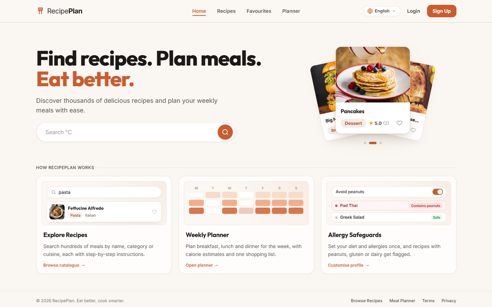

RecipePlan
As the team lead and one of the full-stack developers on this project, I was tasked with building the Accounts & Preferences Module — the part of the platform that keeps every recipe safe for each user's diet and allergies.
Platform
Full-Stack Developer
Allergy Safety
Preferences Module

Find Recipes. Plan Meals.
Cook With Confidence.
RecipePlan brings searching, saving and planning meals into one place. Users set their diet and allergies once, and every recipe is checked against them. They can save favourites, rate recipes, plan breakfast, lunch and dinner for the week, and get one combined shopping list. It all syncs to their account, so it follows them from phone to laptop.
Technology Stack
Every technology behind RecipePlan and how I used it.
Plain HTML, CSS and JavaScript with no framework or build step. Each page has its own module, and I wrote the shared modules for accounts, preferences, languages and data that every other page imports.
Kept every page on the same colours, spacing and components. I also set up the Tailwind CLI to pre-build the stylesheet for the busiest pages, so they no longer wait on the CDN to load.
Email and password accounts with an enforced password policy, Google sign-in, password reset and account deletion, with every Firebase error turned into a plain-English message.
Stores each user's profile, favourites, weekly plans, shopping lists and reviews. I designed the schema and wrote the read and write helpers the rest of the team built their features on.
Server-side rules so users can only ever touch their own data, and reviews are rejected unless they have exactly the right fields, 1 to 5 stars and a comment under 300 characters.
The source of every recipe. It has no allergen data, so my checker reads the ingredient names it returns to work out which recipes clash with a user's diet or allergies.
Translates the whole site into 130+ languages. Searches typed in other languages are translated to English before they reach TheMealDB, and cached so repeat searches are instant.
A local copy of the account and preferences lets pages draw straight away while Firebase is still loading, and keeps preferences working even when the connection is slow.
I set up the workflows that deploy the site to GitHub Pages and Firebase Hosting on every merge to main, plus preview deploys for pull requests.
Technical Toolkit
The responsibilities I owned and the skills I used on this project.
My Responsibilities
Key Technical Skills
Project Journey
A structured walkthrough of my contribution across each phase.
The Problem
Deciding what to cook every day takes more effort than it should. Recipes are scattered across websites, bookmarks and notes, so people search, compare and then forget what they found. For anyone with a diet or a food allergy it is worse: every ingredient list has to be read by hand, and one missed ingredient can make a meal unsafe.
Core Challenge
No single place to find, check and plan meals. Allergy checks were manual, plans and shopping lists lived in separate apps, and nothing followed users across devices.
Project Scope
Build a recipe finder and weekly meal planner with accounts, diet and allergy warnings, favourites, ratings and one combined shopping list, all synced to the cloud.
Why a Language Switcher?
I built RecipePlan while on exchange at Gachon University in South Korea, surrounded by international students from all over the world. Not everyone is comfortable reading English, so I came up with the idea of a language switcher: anyone can use the site and search for recipes in their own language, from Korean to Vietnamese to Spanish.
My Role
As team lead and one of the full-stack developers, I owned the Accounts & Preferences Module: everything about who the user is, what they can eat and keeping their data safe. I also set up how the team worked together and brought everyone's features into one site.
Backend
Firebase Authentication, the Firestore schema and its helper functions, and the security rules that protect every user's data.
Frontend
Login and sign-up pages, the two-step onboarding, the profile and settings page, and the language switcher in the navbar.
Team Lead
Split the work by feature and file, documented the shared functions everyone called, and reviewed and merged work from the dev branch into main.
Integration & Deployment
Set up automatic deploys with GitHub Actions and fixed bugs across features so the whole site worked as one product.
Solution Design
I designed the path a user takes from signing up to seeing only recipes that are safe for them, so their preferences are set once and then checked everywhere automatically.
User Creates an Account
Sign up with email or Google. Passwords need 8+ characters, a number and a special character, enforced both in the form and by Firebase.
Two-Step Onboarding
Pick from 9 diets, then 9 allergens. Each step saves straight away, so leaving halfway never loses progress.
Every Recipe Is Checked
Each recipe's ingredients are matched against the user's diet and allergies on search results, favourites, the recipe page and the planner.
Warn, Hide or Swap
Clashing recipes get a warning badge, can be hidden completely, ask for confirmation before joining the meal plan, and suggest up to 3 swaps per ingredient.
Data Architecture
One Firestore document per user, with favourites, weekly meal plans, shopping lists and rated recipes stored underneath it, so all of a user's data can be found and deleted together.
Checker Design
Keyword groups for each diet and allergen, each with its own exceptions, so ingredients are matched on meaning rather than just on matching words.
Problems I Solved
Building something people trust with their allergies and their accounts meant finding and fixing the cases where things could quietly go wrong.
False Allergy Warnings
Problem: simple word matching flagged coconut milk as dairy, butter beans as
butter and eggplant as eggs.
Fix: added exception phrases to every keyword
group, so warnings only appear for real matches.
Half-Deleted Accounts
Problem: Firebase can refuse to delete an account after the data is already
gone.
Fix: the app checks the user signed in recently first, then removes
their reviews, favourites, plans and profile before the account itself.
Unsafe Redirects
Problem: the redirect link after login could be edited to send users to
another website.
Fix: a check that only allows pages on RecipePlan's own
site.
Searches in Other Languages
Problem: TheMealDB only understands English, so non-English searches found
nothing.
Fix: searches are translated to English first, while allergy
checks always run on the original English ingredients.
Missing Profiles
Problem: some new accounts could end up without a
profile in the database.
Fix: every login now makes sure the user's profile
exists before continuing.
Slow First Load
Problem: the Tailwind CDN and sign-in checks blocked the home page from
showing.
Fix: a pre-built stylesheet, compressed images and a delayed
sign-in check so the page appears first.
Outcomes & Impact
My module turned RecipePlan from a recipe search into a personal tool that knows what each user can eat and keeps their data safe.
Safer Browsing
Users set their diet and allergies once and every recipe is checked for them, with clear wording that the warnings are a helper, not a guarantee.
One Account Everywhere
Preferences, favourites and plans sync to the cloud, so they follow users from their phone to their laptop.
Open to More People
With 130+ languages, international students and anyone else can use the site and search for recipes in the language they are most comfortable with.
Faster Teamwork
Shared, documented functions let everyone build their features in parallel and plug them together without rewriting each other's code.